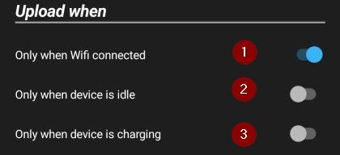
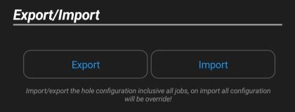
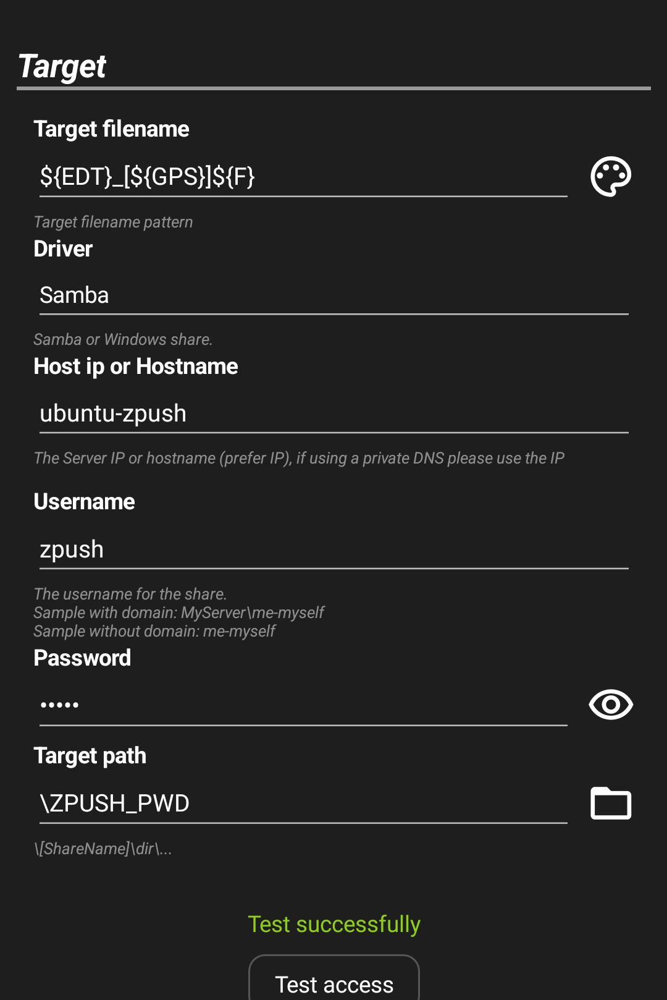
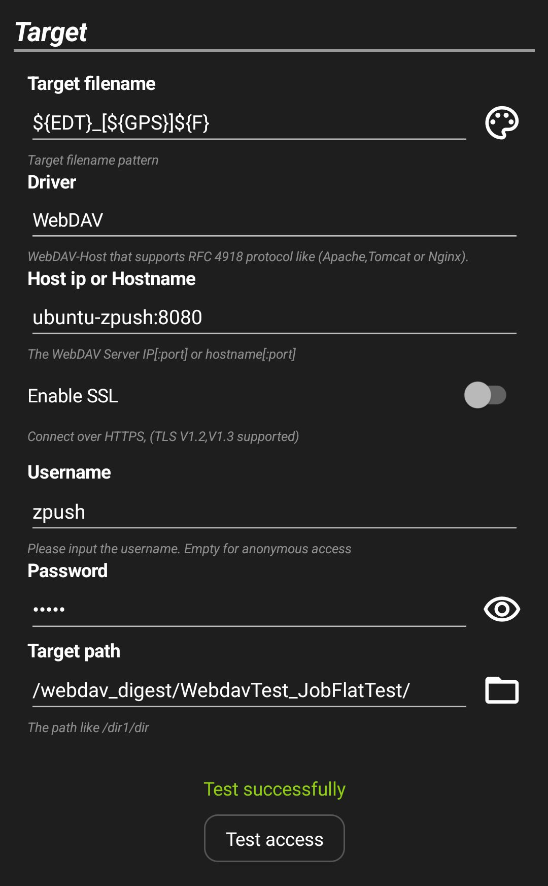
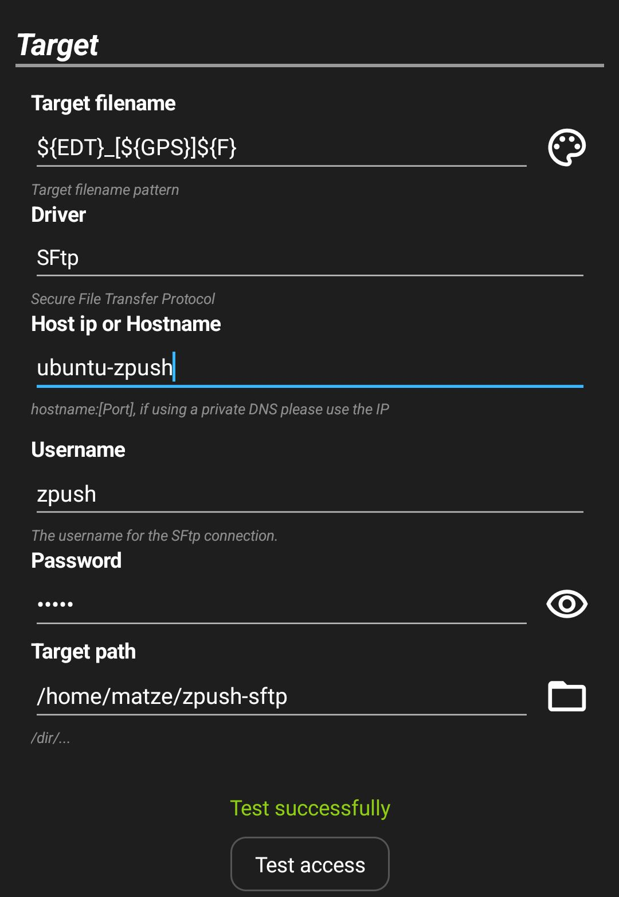
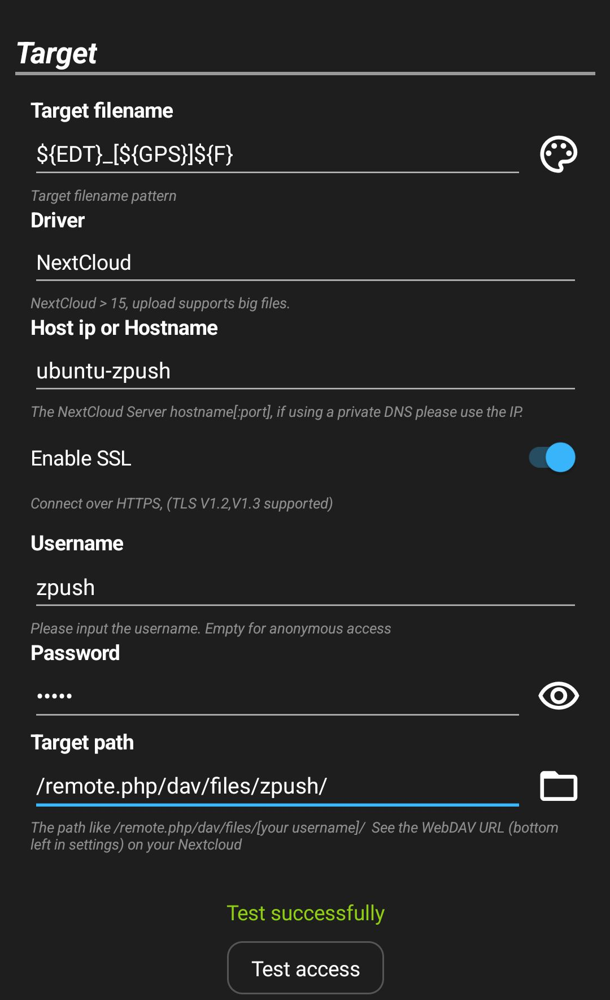
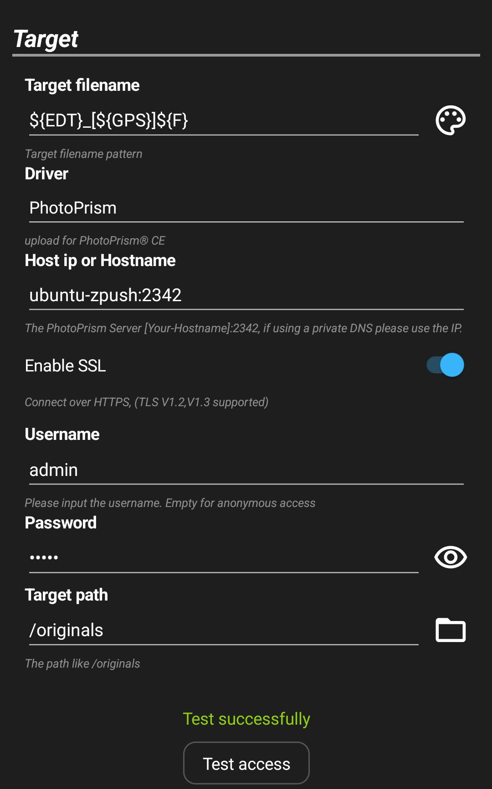

ZPush is an Android application that allows you to transfer files from your smartphone to a server on
your network.
Unlike other Android apps, ZPush uses the approach of transmitting new or modified files to the server only once.
This allows you to move the files on the server without them being retransferred by ZPush.
ZPush is primarily designed to automatically save e.g. photos from your smartphone to your private
server without manual interaction.
Android Wifi connections can have dynamic Mac addresses. This can cause problems when changing the access point, so that the name resolution of the server does not work for a while. To avoid these problems, deactivate the dynamic assignment of the MAC address in the Wifi configuration of the connected Wifi network. Alternatively, you can also work with IP addresses in ZPush.
You are already very close to solving the problem since you are reading this guide :-) But there are always problems where you get stuck and if you think it's ZPush because other software works, please contact me. On the "About ZPush" page there is an “Email to support” button that you can use to send me an email with all the information I need to analyze the problem. The information does not include passwords but server names and IP addresses.
The upload frequency defines how often ZPush check all activated jobs for new files and upload this files. The android system decides itself when ZPush is executed, and therefore the following times are ony approximate values. The left position of the slider suggests Android to start every 15 minutes, and the right position 10 hours.
The scheduler only starts if these selected conditions are all fulfilled.
Here you specify how often ZPush attempts to repeat the failed operation before it aborts with an error. You can specify this first for all operations, that are executed during the upload. For the spinup for the Nas you can set this in the second slider and only affects the Nas spinup.
You can export all Job configurations to save this on your device. The import, deletes all exists jobs and restores the jobs from the export.
Tap here to open the directory picker and select a directory for upload.
You can set include filter, all files match the pattern will be uploaded. Input a patter like: "*.jpg,*.gif". Separate each pattern with a comma.
This is like "include filter" but exclude the files that match the patterns.
If a file uploaded successfully, ZPush delete this from the device.
Please note that the source file will be irretrievably deleted.
If activated, a checksum of the target file and source file is calculated and compared. This ensures that the target file corresponds 100% to the source file.
Please note that double the amount of data is transferred when activated.
Upload all files included all subfolder, if enabled the target structure is hide.
Skips files if they are larger than specified and no Wi-Fi is connected. If the job is run again and Wi-Fi is available, the skipped files are transferred. This option is useful if you also transfer files via the mobile network when you are on the move, but prefer to transfer larger files via your Wi-Fi network
Opens the page for setting the starting point for the next transfer. This makes it possible to skip files or transfer them again.
Defines the pattern how the target filename will be created. Tab in the icon on the right to open the designer.
ZPush reads exif information from your image file when copying (only .jpg and .jpeg exif data is supported) and makes the information available in different variables. If no exif data is found or if it is not a jpg file, the file system information is evaluated.
The target structure can be used to determine the type of files to be stored. This is very useful if you want to store your images in a structured way.
Please note that the structure can only be set if the option “Include all subdirectories and files” is not activated!
Follow target structures are availabel:Select the driver depend on your target server.
Follow driver are available:
Input here the server name or the IPv4 or IPv6 address and if the port deviating from the standard you can append it by double point. If you have problems with the Name resolution, please use the Ip address or deactivate the dynamic Mac address on your device.
Samples:If you have a http based protocol, you can enable SSL to communicate over https. Self singed certificates are accepted!
Input the username target directory need an authentication. Leave empty for anonymous access.
Input the right password for the given username.
The target path depends on your selected driver
If you click the folder icon, a directory picker opens, and you can browse the right target directory.
This button test your setting and check if the server reachable and can access the selected
directory.
Please test always your settings!
In this chapter you will see various example configurations of how you can configure your target system.
This example uses the root folder from the share ZPUSH_PWD. A user and password are required for this share. If you do not require a user for your share, leave the User field empty.
Please note that Windows 11 no longer supports anonymous connections! With Windows 11, you must authenticate yourself with a user and password.
This example uses WebDAV (Web-based Distributed Authoring and Versioning) which can be accessed via Http under port 8080. It requires authentication and this can be done via “Basic Authentication” or “Digest Access Authentication”.
This example for SFTp (Secure File Transfer Protocol) shows a connection to a Linux computer, the user name and password corresponds to an operating system user.
This is an example for Nextcloud users and accesses an installed Nextcloud via Https with the Nextcloud user zpush. Please make sure that the user is correctly specified in the target path.
This example uses the PhotoPrism software, in this example PhotoPrism is configured for Https and runs under the standard port 2342.
